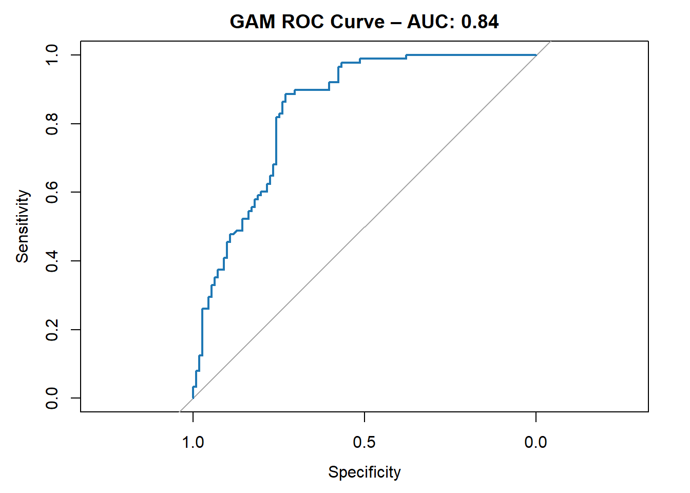
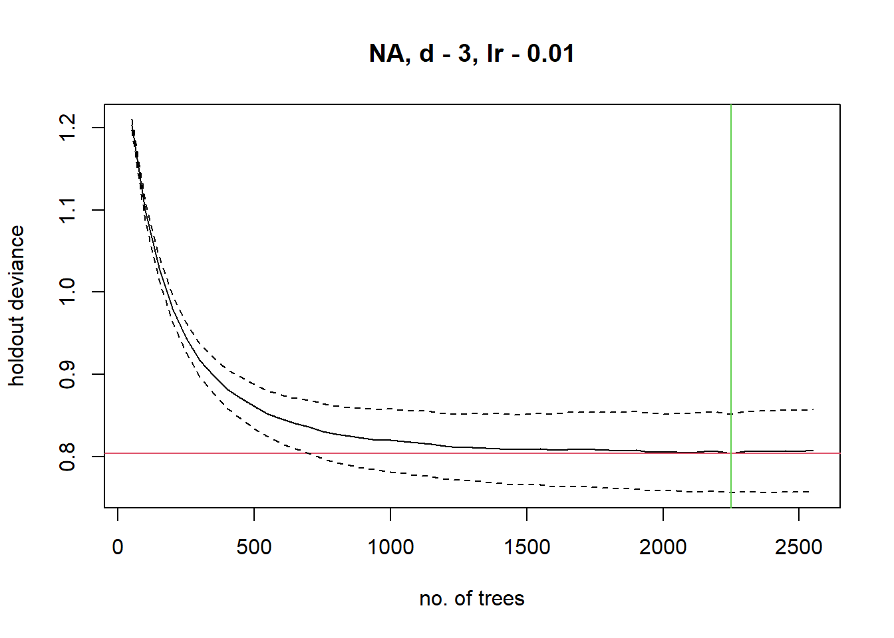
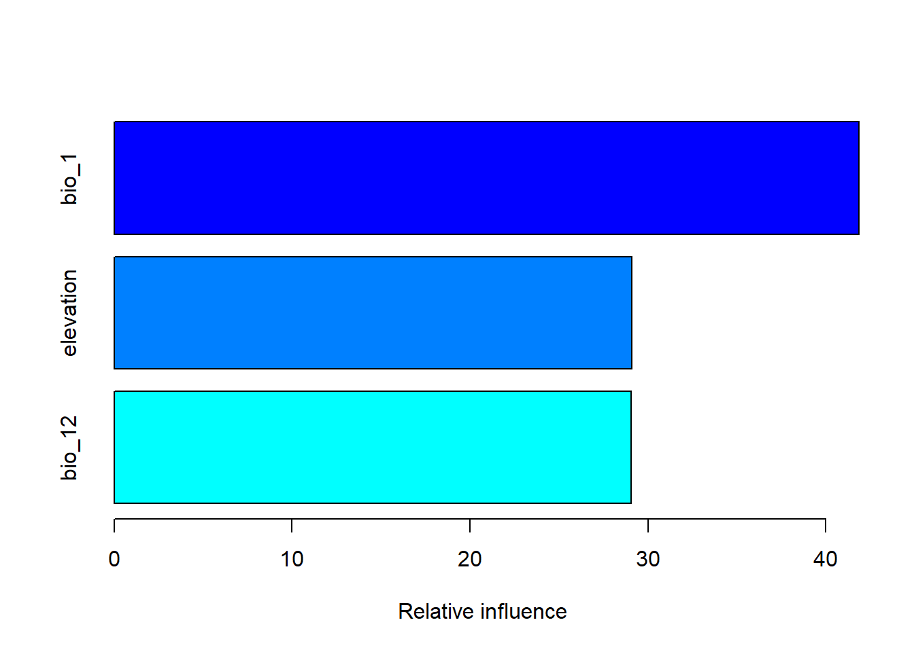
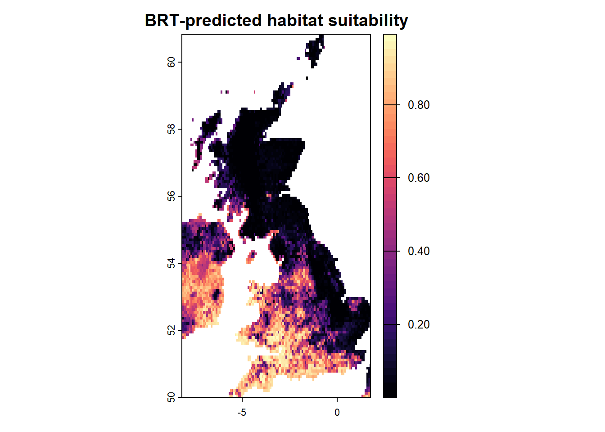
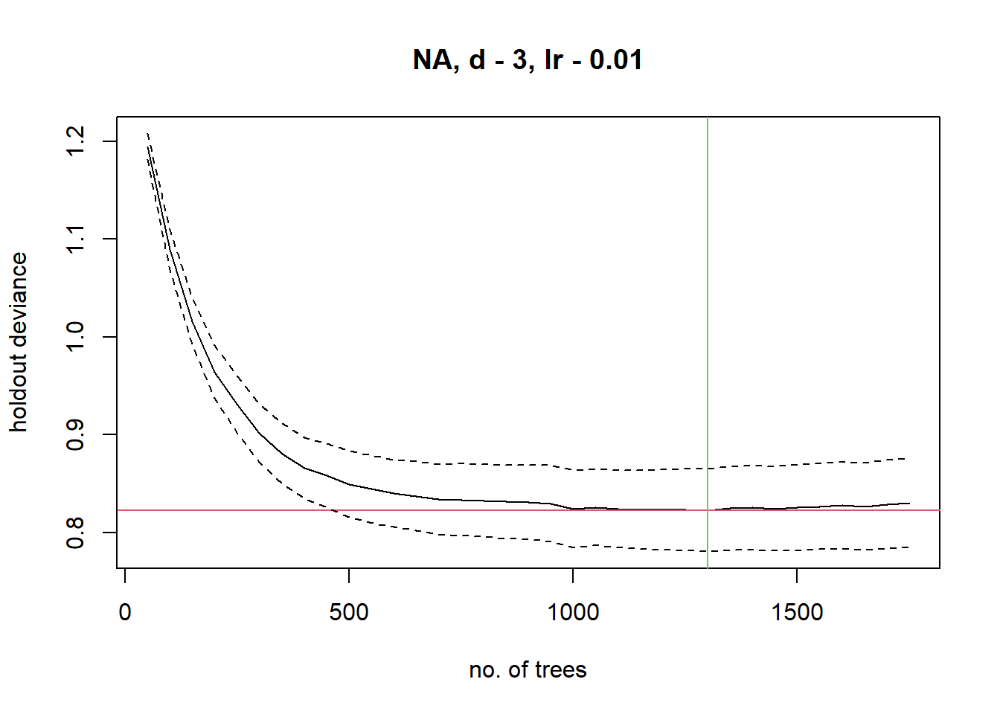
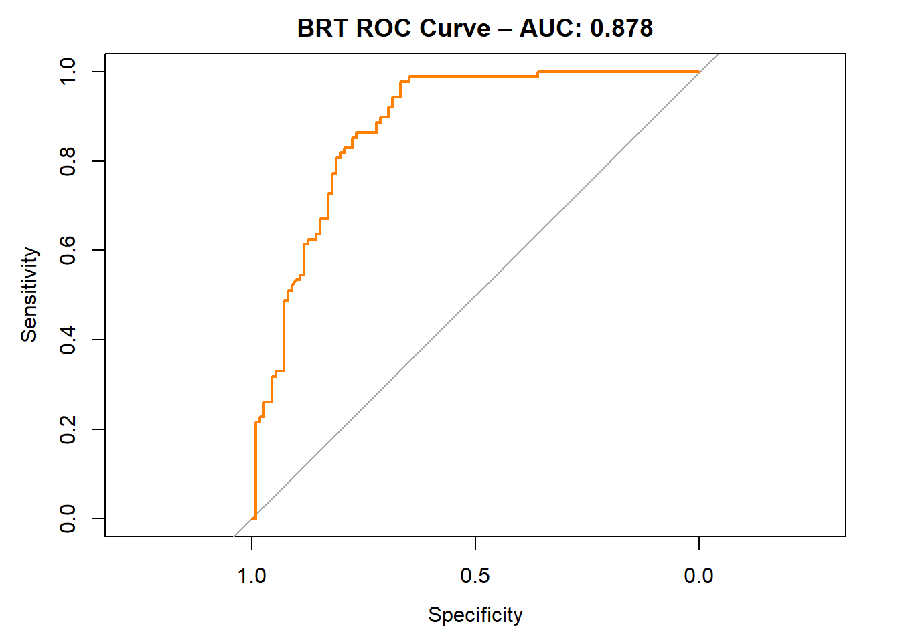
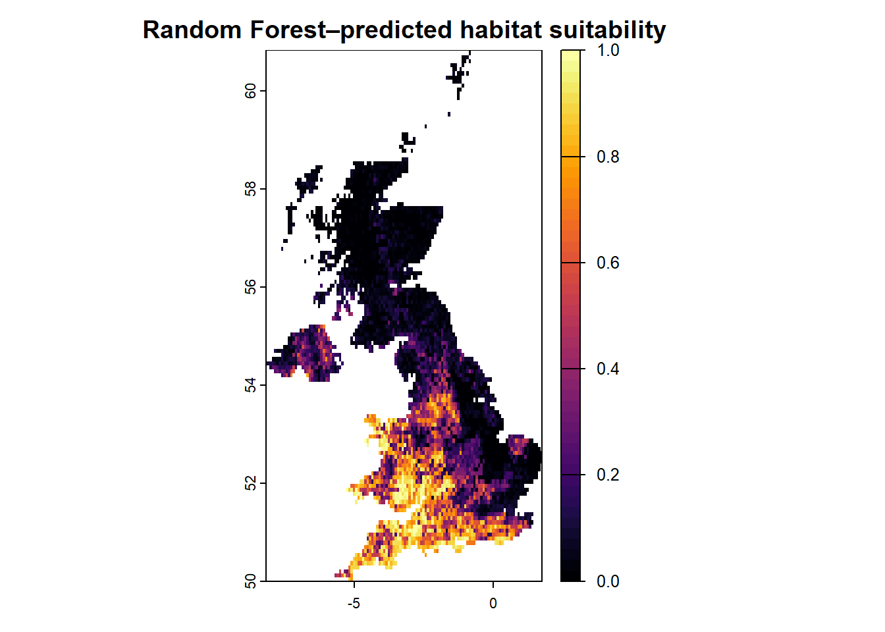
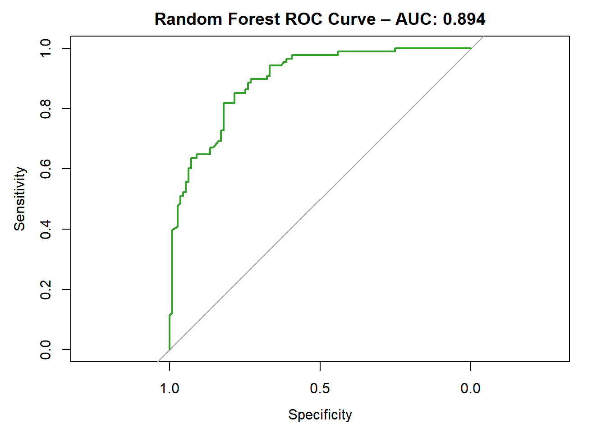
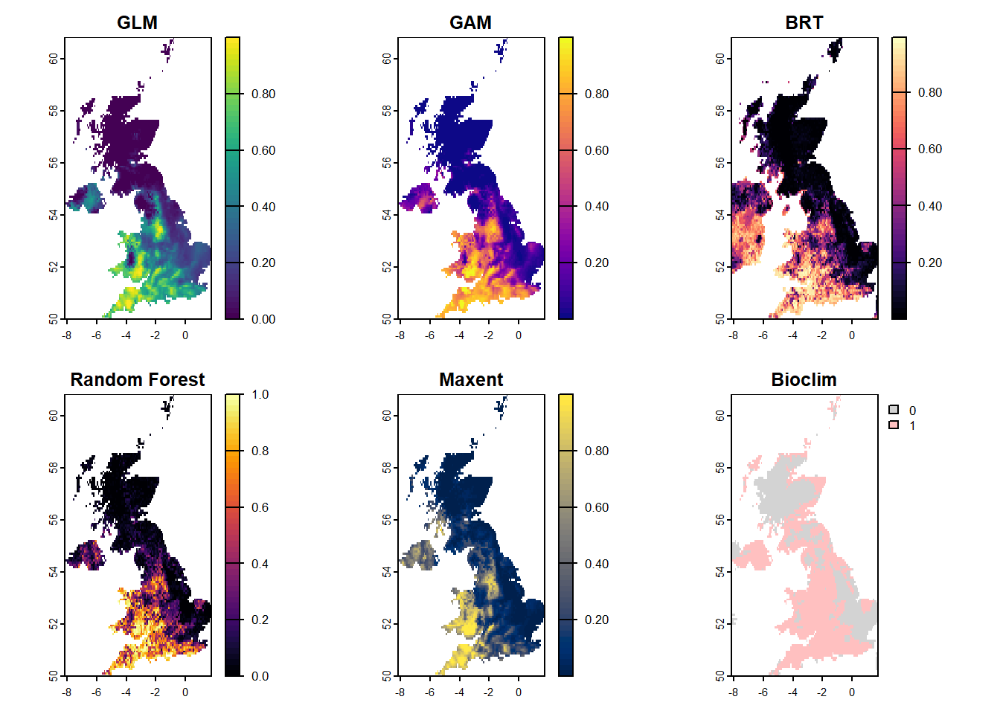

Species Distribution Models (SDMs) can be built using a variety of algorithms, each with its own assumptions, strengths, and limitations. While earlier in this workshop we focused on fitting a simple Generalized Linear Model (GLM), this section broadens the scope to explore alternative approaches commonly used in ecological modelling and biogeography.
Widely used SDM algorithms include:
Generalized Additive Models (GAM): Flexible regression models that capture non-linear relationships using smoothing functions.
Boosted Regression Trees (BRT / GBM): Ensemble models that combine many decision trees for robust predictions.
Random Forests: A tree-based ensemble method that averages multiple models to improve accuracy and reduce overfitting.
MaxEnt: A popular presence-only modelling method based on the principle of maximum entropy.
Bioclim: A simple climatic envelope model based on observed environmental ranges (not covered in this workshop).
INLA (Integrated Nested Laplace Approximation): A Bayesian framework allowing spatially explicit modelling of species distributions.
Artificial Neural Networks (ANN): Flexible machine learning models that can capture complex non-linear relationships, though often harder to interpret.
In this section we will fit some of these algorithms to the same species–environment dataset in order to compare their predictive performance and understand how different methods respond to the same data. This comparison highlights the variability that can arise depending on algorithm choice, which is an important consideration when using SDMs for decision-making in conservation, land-use planning, or climate change impact assessment.
Throughout this section, we will assess model performance using metrics such as AUC (Area Under the Curve), sensitivity, specificity, and TSS (True Skill Statistic). We will also explore how each algorithm predicts habitat suitability across geographic space, and discuss differences in their outputs.
This foundation will prepare us for the next step: ensemble modelling, where we combine the strengths of multiple algorithms to generate more robust and reliable predictions.
1. Generalised Additive Models (GAMs)
Generalised Additive Models (GAMs) extend Generalised Linear Models (GLMs) by allowing for non-linear relationships between predictors and the response variable. In the context of species distribution modelling, GAMs can capture complex ecological responses to environmental gradients using smooth functions, rather than assuming a linear or quadratic form.
GAMs are particularly useful when species responses to predictors (e.g., temperature, elevation, precipitation) are expected to be curved or irregular. This flexibility often improves model fit and interpretability without overfitting — especially when using automatic smoothing penalties.
In R, GAMs are commonly fitted using the mgcv package, which supports efficient estimation of smooth terms and model diagnostics.
Fitting a GAM with mgcv
library(mgcv)# Fit GAM with smooth terms for selected predictorsgam_model <-gam(pa ~s(bio_1) +s(bio_12) +s(elevation), data = sdm_df_clean, family =binomial(link ="logit"))summary(gam_model)
Smoothed relationships estimated by GAM for each predictor.
This visualisation helps interpret non-linear ecological responses. For example, a unimodal response to temperature might suggest an optimal thermal range for the species.
Predicting habitat suitability with GAMs
Once a GAM is fitted, we can project it onto environmental raster layers to generate spatial predictions of habitat suitability.
library(terra)library(viridis)# Make sure the raster stack contains the same predictor namesproj_stack <- Env_UK_stack[[c("bio_1", "bio_12", "elevation")]]names(proj_stack)
[1] "bio_1" "bio_12" "elevation"
# Predict using the GAM modelgam_suitability <- terra::predict(proj_stack, gam_model, type ="response")# Plot the predictionplot(gam_suitability,main ="GAM-predicted habitat suitability",col =plasma(50))
Evaluating GAM performance
We can evaluate the model using a hold-out test set or cross-validation. Here’s an example using a simple AUC-based assessment.
library(pROC)# Fit GAM to training data onlygam_model_train <-gam(pa ~s(bio_1) +s(bio_12) +s(elevation), data = sdm_df_train, family =binomial(link ="logit"))# Predict on test datagam_predict_test <-predict(gam_model_train, newdata = sdm_df_test, type ="response")# Evaluate on test dataroc_gam <- pROC::roc(sdm_df_test$pa, gam_predict_test)auc_gam <- pROC::auc(roc_gam)# Plot ROCplot(roc_gam, col ="#1f78b4", main =paste("GAM ROC Curve – AUC:", round(auc_gam, 3)))

TipIncorporating spatial structure in GAMs and GLMMs
While the GAM example above focuses on smooth functions of environmental variables, GAMs can also include spatial effects by adding smooth terms for geographic coordinates, such as s(x, y). This approach accounts for spatial autocorrelation, where observations close in space tend to be more similar than those farther apart — a common feature in ecological data.
Similarly, Generalized Linear Mixed Models (GLMMs), for example using the glmmTMB package, can incorporate spatial random effects or spatial covariance structures to capture unmeasured spatial variation. These methods improve model fit and inference by explicitly modelling spatial dependence rather than assuming observations are independent.
Recognizing and incorporating spatial structure is essential for robust species distribution models, especially when ecological processes operate across space or when sampling design introduces spatial bias.
Here is a simple example of fitting a GAM with a spatial smooth term using the mgcv package:
Example: Fitting a GAM with a spatial smooth
library(mgcv)# Fit GAM with environmental predictors and spatial smoothgam_spatial <-gam(pa ~s(bio_1) +s(bio_12) +s(elevation) +s(latitude, longitude),data = sdm_df_clean,family =binomial(link ="logit"))# Plot the spatial smooth term (usually the last smooth)plot(gam_spatial, select =length(gam_spatial$smooth), shade =TRUE,main ="Spatial smooth s(latitude, longitude)")
Example: Fitting a GLMM with a spatial randnom effects
library(glmmTMB)library(spaMM) # optional package for more advanced spatial covariance structures# -----------------# 1. Continuous spatial random effect (distance-based covariance)# -----------------# Define a numeric spatial factor from coordinatessdm_df_clean$pos <-numFactor(sdm_df_clean$longitude, sdm_df_clean$latitude)# Fit a GLMM with a spatially correlated random effectglmm_spatial <-glmmTMB( pa ~ bio_1 + bio_12 + elevation + (1| pos),data = sdm_df_clean,family =binomial(),covstruct =list(pos ="exp") # exponential spatial correlation)summary(glmm_spatial)# -----------------# 2. Discrete spatial grouping effect (site-level random intercepts)# -----------------# Create a grouping factor that clusters nearby observationssdm_df_clean$spatgroup <-factor(paste0(round(sdm_df_clean$latitude, 2), "_",round(sdm_df_clean$longitude, 2)))# Fit a GLMM with a random grouping effectglmm_spatialgroup <-glmmTMB( pa ~ bio_1 + bio_12 + elevation + (1| spatgroup),data = sdm_df_clean,family =binomial())summary(glmm_spatialgroup)
Note: In spatial GLMMs, random spatial effects can be incorporated in two main ways:
Continuous spatial random effects, where covariance betweens ties is a function of geographic distances (as in the ‘numFactor()’ example)
Discrete spatial grouping effects, where nearby observations are assigned to the same group or grid cell (as in the ‘spatgroup’ example).
The first approach capture smooth, distance based spatial correlation and is closer to true geostatistical modelling, the second is simpler but often sufficient when data are highly clustered or when corrdiantes are coarse.
2. Machine Learning–Based SDM Methods
Machine learning (ML) methods have become increasingly popular in species distribution modelling due to their ability to model complex, non-linear relationships between species occurrence and environmental variables. Unlike traditional regression-based approaches (such as GLMs or GAMs), which require the modeller to explicitly define the form of each predictor (e.g., linear terms, polynomial terms, or smooth functions), machine learning models can automatically learn patterns, thresholds, and interactions from the data.
At their core, machine learning algorithms aim to find the statistical relationships or decision rules that best predict an outcome based on input features, typically by minimizing some form of prediction error. They do this by iteratively adjusting model parameters or structures in response to data, often without assuming any fixed functional form in advance.
This flexibility makes ML methods particularly valuable in ecological applications where relationships between species and environment may be unknown, non-linear, or influenced by multiple interacting factors. They are also well suited for large datasets with many predictors or complex structures, such as spatial or temporal autocorrelation.
TipWhat does a machine learning model ‘learn’?
The plot below shows a simplified example of how a machine learning algorithm (e.g. decision tree, random forest, or boosted tree) separates presence and absence records based on two environmental predictors. The algorithm automatically finds patterns and draws boundaries in the data space to predict species occurrence without the modeller needing to specify a particular equation. The model ‘learns’ by testing different patterns and combinations in the data, adjusting itself to improve predictions on new, unseen observations. This iterative process helps it find rules that generalize beyond the training examples.
2.1 Boosted Regression Trees (BRG/GBM)
Boosted Regression Trees (BRTs), also known as Gradient Boosting Machines (GBMs), are powerful machine learning models that combine the strengths of two methods: regression trees and boosting.
A regression tree is a model that recursively splits the data based on predictor variables to reduce variance in the response. While a single tree may be simple and prone to overfitting, boosting builds an ensemble of many small trees in sequence. Each new tree focuses on the prediction errors made by the previous ones, gradually improving overall accuracy.
This iterative process makes BRTs highly flexible and effective at modelling complex ecological responses, including interactions and non-linear effects. They are particularly well-suited to species distribution modelling, where ecological relationships can be intricate and noisy.
We will use the gbm.step() function from the dismo package, which automates parameter tuning and cross-validation for BRTs.
library(dismo)library(gbm)# Data needs to in dataframe format for dismo::gbm.step()sdm_df_clean <-as.data.frame(sdm_df_clean)# Ensure response is numeric 1-0sdm_df_clean$pa <-as.numeric(as.character(sdm_df_clean$pa))brt_model <-gbm.step(data = sdm_df_clean,gbm.x =c("bio_1", "bio_12", "elevation"),gbm.y ="pa",family ="bernoulli",tree.complexity =3,learning.rate =0.01,bag.fraction =0.5,verbose =FALSE)
GBM STEP - version 2.9
Performing cross-validation optimisation of a boosted regression tree model
for NA and using a family of bernoulli
Using 661 observations and 3 predictors
creating 10 initial models of 50 trees
folds are stratified by prevalence
total mean deviance = 1.3851
tolerance is fixed at 0.0014
now adding trees...

NoteUnderstanding the holdout deviance plot
The plot shows holdout deviance (a measure of model error) on cross-validated data versus the number of trees in the Boosted Regression Tree (BRT) model.
Lower deviance indicates better model fit.
Each point o the line represents the deviance after adding that many trees.
The red horizontal line marks the mean deviance at the optimal number of trees determined via cross-validation.
The curve usually declines initially, then levels off; if it rises, overfitting may occur.
Choosing the number of trees at the minimum deviance balances predictive performance and model complexity.
Even if the deviance curve looks smooth, cross-validation helps select a robust number of trees rather than relying solely on training data.
Once fitted, we can explore variable influence and partial dependence plots:
summary(brt_model)

Partial dependence plots from the BRT model showing species response to each predictor.
Partial dependence plots from the BRT model showing species response to each predictor.
Predicting habitat suitability with the BRT
We can now project the BRT model to the environmental raster layers:
library(terra)library(viridis)proj_stack_sub <- Env_UK_stack[[c("bio_1", "bio_12", "elevation")]]names(proj_stack_sub) <-c("bio_1", "bio_12", "elevation") # ensure matching names# Predict habitat suitabilitybrt_prediction <- terra::predict(proj_stack_sub, brt_model, type ="response")# Mask to land area (optional: using the first raster as template)# This sets ocean/NA areas back to NAbrt_prediction <-mask(brt_prediction, proj_stack_sub[[1]])# Plot with color scale emphasizing land valuesplot(brt_prediction,main ="BRT-predicted habitat suitability",col =magma(50),na.col ="lightblue")

Model evaluation
Evaluate the model on training data using AUC:
library(pROC)# Data needs to in dataframe format for dismo::gbm.step()sdm_df_train <-as.data.frame(sdm_df_train)# Ensure response is numeric 1-0sdm_df_train$pa <-as.numeric(as.character(sdm_df_train$pa))# Fit BRT to training data onlybrt_model_train <-gbm.step(data = sdm_df_train,gbm.x =c("bio_1", "bio_12", "elevation"),gbm.y ="pa",family ="bernoulli",tree.complexity =3,learning.rate =0.01,bag.fraction =0.5,verbose =FALSE)
GBM STEP - version 2.9
Performing cross-validation optimisation of a boosted regression tree model
for NA and using a family of bernoulli
Using 463 observations and 3 predictors
creating 10 initial models of 50 trees
folds are stratified by prevalence
total mean deviance = 1.3863
tolerance is fixed at 0.0014
now adding trees...

# Predict on test databrt_predict_test <-predict(brt_model_train, newdata= sdm_df_test, n.trees = brt_model_train$gbm.call$best.trees, type ="response")roc_brt <- pROC::roc(sdm_df_test$pa, brt_predict_test)auc_brt <- pROC::auc(roc_brt )plot(roc_brt, col ="#ff7f00", main =paste("BRT ROC Curve – AUC:", round(auc_brt, 3)))

2.2 Random Forests
Random Forests are a powerful and widely used machine learning method in species distribution modelling. Like Boosted Regression Trees, they are based on ensembles of decision trees — but instead of boosting, Random Forests rely on bagging (bootstrap aggregation).
Each tree in the forest is trained on a different random subset of the data. At each split, only a random subset of predictor variables is considered. This process reduces overfitting and makes the model more robust, particularly when dealing with correlated predictors or noisy data.
In SDM, Random Forests are valued for their high predictive accuracy, ability to handle non-linear and interactive effects, and their built-in estimates of variable importance.
Below we fit a Random Forest SDM using the randomForest package.
library(randomForest)# Make sure 'pa' is a factor for classificationsdm_df_clean$pa <-as.factor(sdm_df_clean$pa)# Fit the modelrF_model <-randomForest(pa ~ bio_1 + bio_12 + elevation,data = sdm_df_clean,ntree =500,importance =TRUE)# View variable importanceprint(rF_model)
Call:
randomForest(formula = pa ~ bio_1 + bio_12 + elevation, data = sdm_df_clean, ntree = 500, importance = TRUE)
Type of random forest: classification
Number of trees: 500
No. of variables tried at each split: 1
OOB estimate of error rate: 19.67%
Confusion matrix:
0 1 class.error
0 254 88 0.2573099
1 42 277 0.1316614
varImpPlot(rF_model, main ="Random Forest Variable Importance")
Predict habitat suitability using Random Forest
We now project the trained model onto the environmental raster layers:
library(terra)library(viridis)# Prepare stackproj_stack <- Env_UK_stack[[c("bio_1", "bio_12", "elevation")]]names(proj_stack) <-c("bio_1", "bio_12", "elevation")# Predict probability of presencerF_prediction <- terra::predict(proj_stack, rF_model, type ="prob", index =2)# Plot predictionplot(rF_prediction,main ="Random Forest–predicted habitat suitability",col =inferno(50))

Evaluate model performance
We use AUC and the ROC curve to evaluate predictive performance:
library(pROC)# Make sure 'pa' is a factor for classificationsdm_df_train$pa <-as.factor(sdm_df_train$pa)sdm_df_test$pa <-as.factor(sdm_df_test$pa)# # Fit randomForest to training data onlyrF_model_train <-randomForest(pa ~ bio_1 + bio_12 + elevation,data = sdm_df_train,ntree =500,importance =TRUE)rF_predict_test <-predict(rF_model_train, newdata= sdm_df_test, type ="prob")[, "1"]roc_rF <- pROC::roc(sdm_df_test$pa, rF_predict_test)auc_rF <- pROC::auc(roc_rF)plot(roc_rF, col="#33a02c", main =paste("Random Forest ROC Curve – AUC:", round(auc_rF, 3)))

Random Forests are often among the top-performing SDM algorithms, especially when the dataset is not too small. However, like other black-box models, they may lack transparency, so careful evaluation and interpretation of variable importance and response curves are recommended.
2.3 Maxent
Maxent (Maximum Entropy) is a widely used algorithms in species distribution modelling when only presence data are available. Unlike regression- or tree-based methods, which typically require both presence and absence points, Maxent estimates the species’ distribution by finding the probability distribution of maximum entropy (i.e., closest to uniform) constrained by the environmental conditions at known occurrence locations.
In practice, Maxent contrasts environmental conditions at occurrence points against conditions across a wider background area, identifying the combination of conditions that best explains the observed presences while avoiding overfitting. This makes it particularly useful for records where absences are unreliable or unknown such citizen museum datasets or science data.
Maxent can be implemented in R via the maxnet package, which provides a native R re-implementation of the Maxent algorithm. Unlike the dismo package’s interface, which requires the standalone Java-based Maxent software, maxnet runs entirely in R and avoids Java dependencies. It fits presence–background models using the same maximum entropy framework, but with a formula interface that allows greater flexibility and integration into R workflows.
library(maxnet)library(terra)# Extract environmental predictors at presence and background locationspresence_vals <- terra::extract(proj_stack, vect(presence_sf)) %>% dplyr::select(-ID)background_vals <- terra::extract(proj_stack, vect(target_group_sf)) %>% dplyr::select(-ID)# Combine into one datasetpa <-c(rep(1, nrow(presence_vals)), rep(0, nrow(background_vals)))env_vals <-rbind(presence_vals, background_vals)# Remove rows with NA in predictorscomplete_idx <-complete.cases(env_vals)env_vals_clean <- env_vals[complete_idx, ]pa_clean <- pa[complete_idx]# Fit Maxent with maxnetmaxnet_model <-invisible(suppressWarnings(suppressMessages(maxnet(p = pa_clean,data = env_vals_clean,f =maxnet.formula(pa_clean, env_vals_clean) ) )))
The output includes model coefficients, variable contributions, and training performance metrics.
Visualising variable contributions
Maxent provides estimates of how much each predictor contributes to the model:
plot(maxnet_model)
Variable importance estimates from the Maxent model.
Projecting habitat suitability with Maxent
Once trained, the Maxent model can be projected across geographic space to estimate habitat suitability:
library(terra)library(maxnet)# 1. Extract raster values as data.frameenv_df <-as.data.frame(proj_stack, xy =TRUE, na.rm =FALSE) # keep xy for plotting# 2. Identify rows without NA (complete cases)complete_idx <-complete.cases(env_df[, names(env_vals)]) # only predictor columns# 3. Predict with maxnetpred_vals <-rep(NA, nrow(env_df)) # initialize outputpred_vals[complete_idx] <-predict(maxnet_model, env_df[complete_idx, names(env_vals)], type ="cloglog")# 4. Convert back to rastermaxent_prediction <- proj_stack[[1]] # take first layer as templatevalues(maxent_prediction) <- pred_vals# 5. Plotplot(maxent_prediction,main ="Maxent (maxnet) predicted habitat suitability",col =cividis(50))
Evaluating model performance
We can evaluate the Maxent model using AUC and the ROC curve, similar to other algorithms:
library(pROC)# Extract environmental values at presence and background pointspresence_vals <- terra::extract(proj_stack, vect(presence_sf)) %>% dplyr::select(-ID)background_vals <- terra::extract(proj_stack, vect(target_group_sf)) %>% dplyr::select(-ID)# Remove rows with NApresence_vals <- presence_vals[complete.cases(presence_vals), ]background_vals <- background_vals[complete.cases(background_vals), ]# {redict with maxnet modelpresence_probs <-predict(maxnet_model, presence_vals, type ="cloglog")background_probs <-predict(maxnet_model, background_vals, type ="cloglog")# Combine into evaluation vectorseval_labels <-c(rep(1, nrow(presence_probs)), rep(0, nrow(background_probs)))eval_probs <-c(presence_probs, background_probs)# ROC and AUCroc_maxnet <- pROC::roc(eval_labels, eval_probs)auc_maxnet <- roc_maxnet$auc# Plot ROC curveplot(roc_maxnet, col ="#6a3d9a", lwd =2, main =paste("Maxent (maxnet) ROC Curve – AUC:", round(auc_maxnet, 3)))abline(a =0, b =1, lty =2, col ="grey")
Maxent is often praised for its strong performance with limited or biased presence-only data, but users should remain mindful of its assumptions. In particular, results are sensitive to the choice of background points and regularisation settings, and caution is required when extrapolating into novel environmental space (e.g., under future climate scenarios).
3. Envelope-Based Models
3.1 Bioclim
Bioclim is one of the earliest and simplest species distribution modelling approaches.
It defines the species’ environmental envelope by summarizing the range of conditions (e.g., temperature, precipitation, elevation) at the observed occurrence locations. Predictions are then made by identifying areas in environmental space that fall within (or close to) this envelope.
Conceptually, Bioclim assumes that a species is equally likely to occur anywhere within its observed environmental limits. This makes it very intuitive and fast to compute, but also limited in its ability to model more complex, non-linear responses. Despite its simplicity, Bioclim is still useful as a baseline SDM and for teaching or comparison purposes.
In R, Bioclim can be fitted using the bioclim() function from the dismo package.
Fitting a Bioclim model
library(terra)library(sf)library(dplyr)# 1. Extract predictor values at presence pointspresence_vals <- terra::extract(proj_stack, vect(presence_sf)) %>% dplyr::select(-ID)# 2. Remove any rows with NApresence_vals <- presence_vals[complete.cases(presence_vals), ]# 3. Compute climatic envelope for each predictorbioclim_min <-apply(presence_vals, 2, min)bioclim_max <-apply(presence_vals, 2, max)bioclim_model <-list(min = bioclim_min,max = bioclim_max)bioclim_model
We can plot the response curves to inspect the species’ environmental envelope:
library(ggplot2)library(tidyr)# Convert min/max ranges to long format for plottingenv_df <-data.frame(predictor =names(bioclim_model$min),min = bioclim_model$min,max = bioclim_model$max) %>%pivot_longer(cols =c(min, max), names_to ="limit", values_to ="value")# Plotggplot(env_df, aes(x = predictor, y = value)) +# Lines connecting min-max in graygeom_line(aes(group = predictor), color ="gray", size =1.2) +# Points colored by limitgeom_point(aes(color = limit), size =3) +# Horizontal ticks at min and maxgeom_segment(aes(x =as.numeric(factor(predictor)) -0.1, xend =as.numeric(factor(predictor)) +0.1,y = value, yend = value,color = limit),size =1.2) +labs(x ="Environmental predictor",y ="Value",color ="Envelope limit") +theme_minimal() +theme(axis.text.x =element_text(angle =45, hjust =1))
Bioclim response curves showing the species’ environmental envelope.
Projecting habitat suitability with Bioclim
Once fitted, the Bioclim model can be projected across the study area:
library(terra)# Extract raster values as a data.frameenv_df <-as.data.frame(proj_stack, xy =TRUE, na.rm =FALSE)# Compute suitability: 1 if all predictors within min/max, 0 otherwisesuitability <-apply(env_df[, names(bioclim_model$min)], 1, function(x) {all(x >= bioclim_model$min & x <= bioclim_model$max)})# Initialize raster for predicted suitabilitybioclim_prediction <- proj_stack[[1]] # templatevalues(bioclim_prediction) <-NA# resetvalues(bioclim_prediction)[!is.na(env_df[[1]])] <- suitability# Plot predicted suitabilityplot(bioclim_prediction,main ="Bioclim-predicted habitat suitability",col =c("lightgrey", "#FFC0C0"),legend =FALSE)legend("topright", legend =c("Unsuitable", "Suitable"), fill =c("lightgrey", "#FFC0C0"))
Bioclim’s simplicity makes it easy to implement and interpret, but it lacks the flexibility of regression- or machine-learning–based approaches. It assumes that all environmental conditions within the observed range are equally suitable, which is often unrealistic. Nevertheless, Bioclim provides a useful baseline comparator in SDM studies and highlights the importance of model choice in shaping predicted distributions.
4. Advanced and Emerging Methods
The field of species distribution modelling is constantly evolving. Beyond classical statistical and machine learning approaches, a number of advanced or emerging methods are now being used in ecological research.
These methods offer new opportunities for handling spatial complexity, uncertainty, biotic interactions and ecological dynamics such as species dispersal and colonisation dynamics and very large datasets, but they may also require greater expertise, computational resources, or specialized software.
4.1 Bayesian SDMs (e.g., INLA)
Bayesian approaches to SDMs provide a probabilistic framework that can incorporate prior knowledge, quantify uncertainty, and explicitly model spatial dependence. One of the most widely used implementations is INLA (Integrated Nested Laplace Approximation), which allows efficient Bayesian inference for spatial models.
Key features of Bayesian SDMs: - Explicitly account for spatial autocorrelation in species occurrences.
- Allow incorporation of prior knowledge about ecological processes.
- Provide posterior distributions for parameters and predictions, offering richer uncertainty estimates than single-value statistics like AUC.
- Flexible framework: can include random effects, hierarchical structures, and complex spatial/temporal dependencies.
Limitations: - Steeper learning curve compared to GLMs or Random Forests - Can be computationally demanding for large datasets
INLA is implemented in the R package R-INLA, though it requires some familiarity with Bayesian modelling concepts.
4.2 Joint species distribution modelling to account for biotic interactions
Most classical SDMs assume that species distributions are shaped primarily by the abiotic environment (e.g., climate, topography, land cover). However, species do not occur in isolation. Their distributions are often influenced by biotic interactions such as competition, predation, facilitation, or mutualism.
Joint Species Distribution Models (jSDMs) extend traditional SDMs by modelling the occurrence of multiple species simultaneously. This allows the estimation of both species–environment relationships and species–species associations, offering a more realistic ecological picture.
Key features of jSDMs:
Shared responses to the environment: capture similarities among species with similar niches.
Residual correlations: identify co-occurrence patterns not explained by environment (potential biotic interactions).
Hierarchical framework: often Bayesian, with species treated as partially exchangeable units.
Can improve predictions, especially for rare species with few records, by “borrowing strength” from related species.
Limitations:
More complex to fit and interpret than single-species SDMs.
Computationally demanding, especially with large species × site matrices.
Correlations may reflect unmeasured environmental covariates rather than true biotic interactions — so ecological interpretation must be cautious.
In R, jSDMs can be fitted using packages such as:
- Hmsc: Hierarchical modelling of species communities (supports spatial/temporal structure).
- boral: Bayesian ordination and regression analysis of multivariate abundance data.
- gjam: Generalized Joint Attribute Modelling, flexible for presence–absence, counts, or continuous traits.
4.3 Dynamic and spatio-temporal SDMs
While spatial SDMs are common, explicitly incorporating time (seasonality, interannual variability, long-term change, movement/dispersal and colonisation) is essential for capturing ecological dynamics and climate change impacts.
Key features:
Capture temporal dynamics in species-environment relationships.
Can model shifts in species ranges over time.
Allow exploration of lagged effects, seasonal cycles, or temporal autocorrelation.
Approaches:
Time-varying covariates in standard SDMs.
Spatio-temporal models using INLA (R-INLA), mgcv::bam() for GAMs with time components.
Dynamic occupancy models (in unmarked, spOccupancy).
Temporal models are especially relevant for climate change projections, phenology, or seasonal migrations.
4.4 Neural networks and deep learning approaches to SDM
Neural networks (NNs), including deep learning approaches, are increasingly being applied to SDMs, especially when working with large, complex datasets such as high-resolution remote sensing imagery or citizen science data.
Key features: - Highly flexible models that can capture complex non-linearities and interactions.
- Convolutional Neural Networks (CNNs) are particularly useful for incorporating spatially structured data such as satellite images or climate surfaces.
- Capable of end-to-end learning (directly predicting species presence/absence from raw data).
Limitations: - Require large datasets for training
- Computationally intensive; often need GPUs or cloud computing
- Models can be difficult to interpret (“black-box” nature)
Despite these challenges, deep learning holds promise for applications such as species recognition from images, integration of multiple data sources, and fine-scale spatial predictions.
4.5 Mechanistic / process-based models
Unlike correlative models, which are based on statistical relationships between species occurrences and environmental variables, mechanistic SDMs explicitly model species distributions using physiological, behavioural, or demographic processes that are assumed to drive species occurrence, abundance, and distribution. These processes are represented through biomathematical functional relationships.
Examples include: - Niche mapping (thermodynamic constraints on heat, water and nutritional balance) - Dynamic range models that simulate dispersal and colonization - Individual-based models (IBMs) t
Mechanistic SDMs offer important advantages over correlative models, including the ability to model novel climates more reliably and explicitly incorporate species traits and physiological limits. However, they require detailed species-specific data and are often complex and computationally intensive, making them less accessible for many applications. Linking mechanistic models to real-world patterns remains a challenge, and model validation approaches are still the subject of ongoing debate. To balance these trade-offs, so-called hybrid approaches that combine correlative and mechanistic elements are emerging as a powerful compromise.
5. Comparing SDM algorithms
Once multiple species distribution models are fitted, it is informative to compare their predictions and performance metrics. This helps learners and practitioners understand how algorithm choice affects model outputs and ecological interpretation.
5.1 Performance metrics comparison
Key metrics include:
AUC (Area Under the ROC Curve): overall discriminatory ability.
TSS (True Skill Statistic): balances sensitivity and specificity.
Sensitivity / Specificity: model’s ability to predict presences vs absences.
Deviance or log-likelihood: for statistical models like GAMs.
You can compile a simple table of metrics for each model:
Comparison of model performance (AUC) across SDM algorithms
Model
AUC
GAM
0.8105002
BRT
0.8399089
Random Forest
0.8613441
Maxent
0.8446836
Bioclim
NA
5.2 Performance metrics comparison
Visual comparison of habitat suitability maps can highlight differences in predicted distributions, smoothness, and sensitivity to rare occurrences or extreme values.
library(viridis)par(mfrow =c(2,3)) # grid layoutplot(glm_suitability_map, main ="GLM", col =viridis(50, option ="D"))plot(gam_suitability, main ="GAM", col =plasma(50))plot(brt_prediction, main ="BRT", col =magma(50))plot(rF_prediction, main ="Random Forest", col =inferno(50))plot(maxent_prediction, main ="Maxent", col =cividis(50))plot(bioclim_prediction, main ="Bioclim", col =c("lightgrey", "#FFC0C0"))

Spatial predictions from different SDM algorithms for visual comparison.
par(mfrow =c(1,1)) # reset layout
NoteLiterature
Bakka, H., Rue, H., Fuglstad, G.-.A., Riebler, A., Bolin, D., Illian, J., Krainski, E., Simpson, D. & Lindgren, F. (2018). Spatial modeling with R-INLA: A review.WIREs Computational Statistics, 10(6), e1443. doi:10.1002/wics.1443
Deneu, B., Servajean, M., Bonnet, P., Botella, C., Munoz, F., & Joly, A. (2021). Convolutional neural networks improve species distribution modelling by capturing the spatial structure of the environment.PLOS Computational Biology, 17(4), e1008856. doi:10.1371/journal.pcbi.1008856
Elith, J., Leathwick, J. R., & Hastie, T. (2008). A working guide to boosted regression trees.Journal of Animal Ecology, 77(4), 802–813. doi:10.1111/j.1365-2656.2008.01390.x
Elith, J., & Leathwick, J. R. (2009). Species distribution models: ecological explanation and prediction across space and time.Annual Review of Ecology Evolution and Systematics, 40, 677–697. doi:10.1146/annurev.ecolsys.110308.120159
Kearney, M. R., & Porter, W. P. (2020). NicheMapR – an R package for biophysical modelling: the ectotherm and Dynamic Energy Budget models.Ecography, 43(1), 85–96. doi:https://doi.org/10.1111/ecog.04680
Wood, S. N. (2017). Generalized additive models. An introduction with R ( 2nd ed.). CRC Press.
Phillips, S.J., Dudík, M., Elith, J., Graham, C.H., Lehmann, A., Leathwick, J. & Ferrier, S. (2009) Sample selection bias and presence-only distribution models: Implications for background and pseudo-absence data.Ecological Applications, 19(1), 181–197. doi:10.1890/07-2153.1